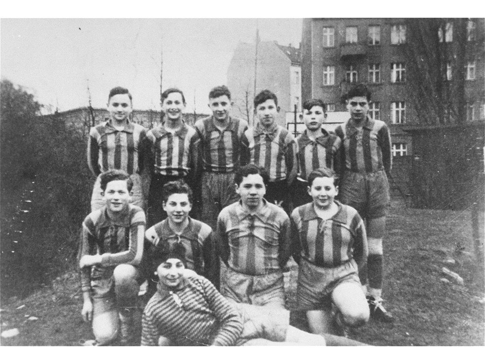

Cut along dashed line to stick neatly into exercise book
KS2 HistoryThe History Revision Hub • Key Stage 2 World War II
Name:
Date:
Pre-War Life & The Rights That Disappeared
Key Enquiry Question: What can photographs teach us about Jewish life before 1939, and how did laws take their rights away?
LESSON 07 KEY STAGE 2

Source A: A boys' football team (1935) posing together in matching striped shirts with their goalkeeper in front.
Historical Reading • Pre-War Everyday Life
Before the Second World War, millions of Jewish families lived across Europe in vibrant cities, quiet market towns, and rural villages. Jewish children went to ordinary schools, rode their bicycles, played football in the park, and formed sports teams just like British children today.
However, when the Nazi regime came to power, they did not attack all rights at once. Instead, they introduced hundreds of anti-Jewish laws step-by-step. Year after year, ordinary joys were taken away: first sports clubs and football leagues, then public parks, family pets, radios, and finally the right to attend school with their friends.
Source B: The November 1938 school ban decree that stopped Jewish pupils attending state schools.
1. Look closely at Source A. What can we learn about these boys from looking at their photograph? Can you tell anything about their nationality or religion just by looking at them?
2. Look at Source B. How would being banned from your school and separated from your friends make you feel?
Task 2: The Rights Ladder • Step-by-Step Discrimination
Chronological Understanding
APRIL 1933
Banned from Sports Clubs
Jewish children and adults are forbidden from joining sports clubs, swimming pools, or athletics teams.
Why start with clubs and hobbies?
SEPTEMBER 1935
Loss of Citizenship
The Nuremberg Laws strip Jewish people of their German citizenship, voting rights, and legal protection.
What does losing citizenship mean?
NOVEMBER 1938
Banned from School & Radios
Jewish children are expelled from state schools. Families must surrender radios, bicycles, and typewriters.
Why confiscate radios and bikes?
Cut along dashed line to stick neatly into exercise book
KS2 HistoryThe History Revision Hub • Key Stage 2 World War II
Lesson 07: Rights & Dignity • Sheet 2
Task 3: Comparative Analysis • Everyday Rights vs Rights Stolen
Human Rights & Empathy
Rights Every Child Expects Today
1. Going to school every day with all your friends:
2. Visiting public parks, playgrounds, and cinemas:
3. Owning a bicycle, keeping a pet, listening to radio:
How Nazi Laws Took These Away (1933–1939)
1. November 1938 School Ban:
2. Park Benches & Cinema Bans:
3. Confiscation of Radios & Pets:
Task 4: Thinking Heads • Two Perspectives in November 1938
Contrasting Perspectives
110-Year-Old Jewish Pupil
What thoughts and feelings might a Jewish pupil have upon being turned away at the gate?
2Classmate Inside the Classroom
What thoughts might a classmate have seeing their best friend's desk suddenly empty?
Task 5: Master Synthesis • Why Must We Remember Pre-War Life?
Historical Significance
Big Question: Why is it so important to discover what children's daily lives and hobbies were like before the war?